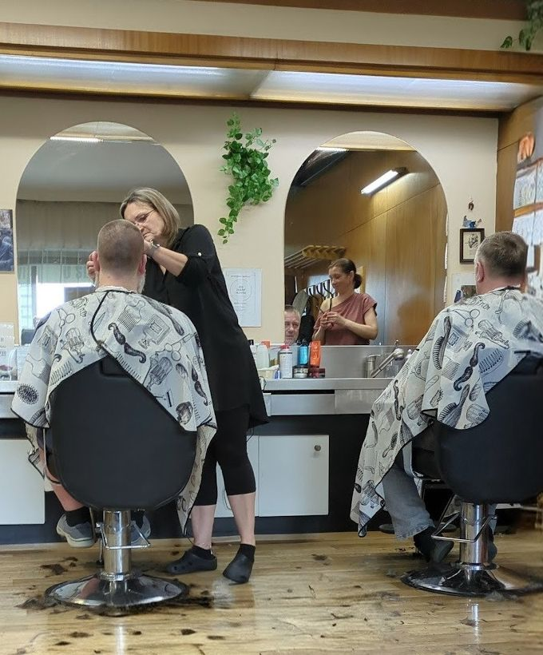
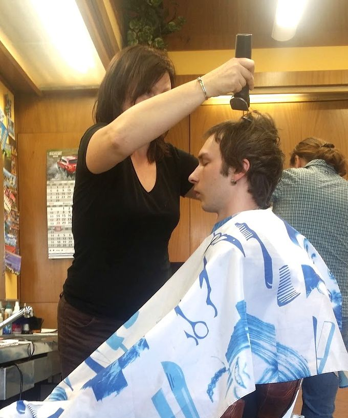
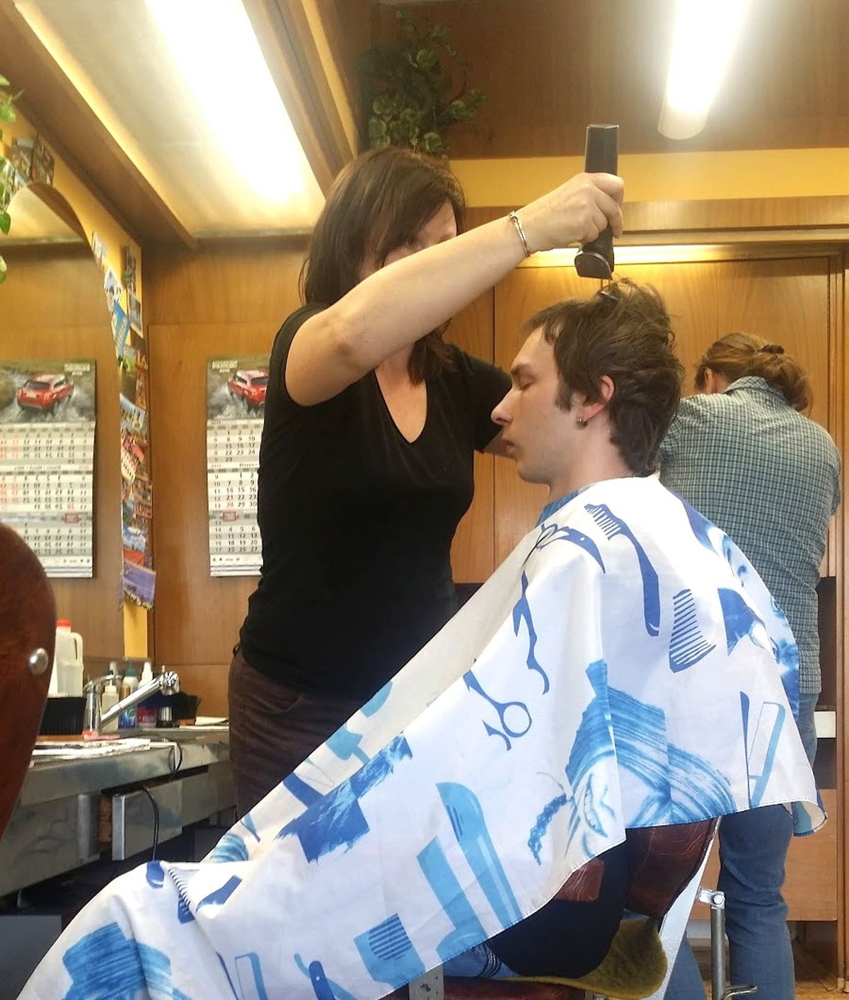

4,6 ze 363 recenzí na Googlu
Pánský kadeřník U Slávie
Pánské kadeřnictví ve Vršovicích, Bělocerkevská 2, Praha 10.
Po–Čt 7–19, Pá 7–18
Jak to u nás chodí
- Objednání
- Žádné. Přijdete, sednete si na lavici a počkáte, až na vás přijde řada.
- Střih
- Klasický pánský střih, strojkem i nůžkami.
- Platba
- Hotově. Karty nebereme.
- Otevřeno
- Od 7 ráno, pondělí až pátek. V sobotu a v neděli je zavřeno.
Co píšou pánové
„Velmi příjemné kadeřnictví – milý a ochotný personál, kvalitní služby a k tomu férové ceny. Rád se sem vracím.“
Jan, říjen 2025
„Není to žádný nóbl kadeřnictví, ale ženský tam pracují léta a svojí práci znají a vždy dobře ostříhají podle mého zadání.“
Vladimir, 2022
„Z dlouhých vlasů pod lopatky jsem měl za 10 minut moderní krátký sestřih. … Líbí se mi ten přístup bez objednání.“
Lukáš, březen 2022
„Rychlé a dobré stříhání bez objednávání se dopředu, což pánové ocení.“
Michal, listopad 2019

Kde nás najdete
| Pondělí (dnes) | 7–19 |
| Úterý (dnes) | 7–19 |
| Středa (dnes) | 7–19 |
| Čtvrtek (dnes) | 7–19 |
| Pátek (dnes) | 7–18 |
| Sobota (dnes) | zavřeno |
| Neděle (dnes) | zavřeno |
Bělocerkevská 1438/2, 100 00 Praha 10‑Vršovice
Kousek od stadionu Slavie. Platí se hotově. Bezbariérové parkování.